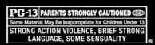

|
something new and exciting that will leave you sitting on the edge of your seat, gripping your keyboard with white knuckles and with all the chix0rs you can handle. Introducing the next generation in online chatting...
EFneXt
Coming to a network near you December 2000
 |